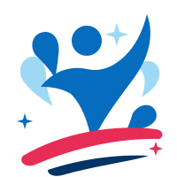

AFFIAT · Aswan Finals 2026
AFFIAT · Aswan Finals 2026
INJURYإصابةRECOVERتعافيDOCTORدكتورKNEEركبةSPORTرياضةGEARمعداتATHLETEرياضيHEALشفاءTRAINتمرين

Sports recovery · Egypt
Vivestand
Your way back to sport.
Pick your injury and get a recovery plan, find a sports doctor, try a free 10-minute online session, and shop second-hand gear for your sport.
Vivestand · AFFIAT · Aswan Finals 20261